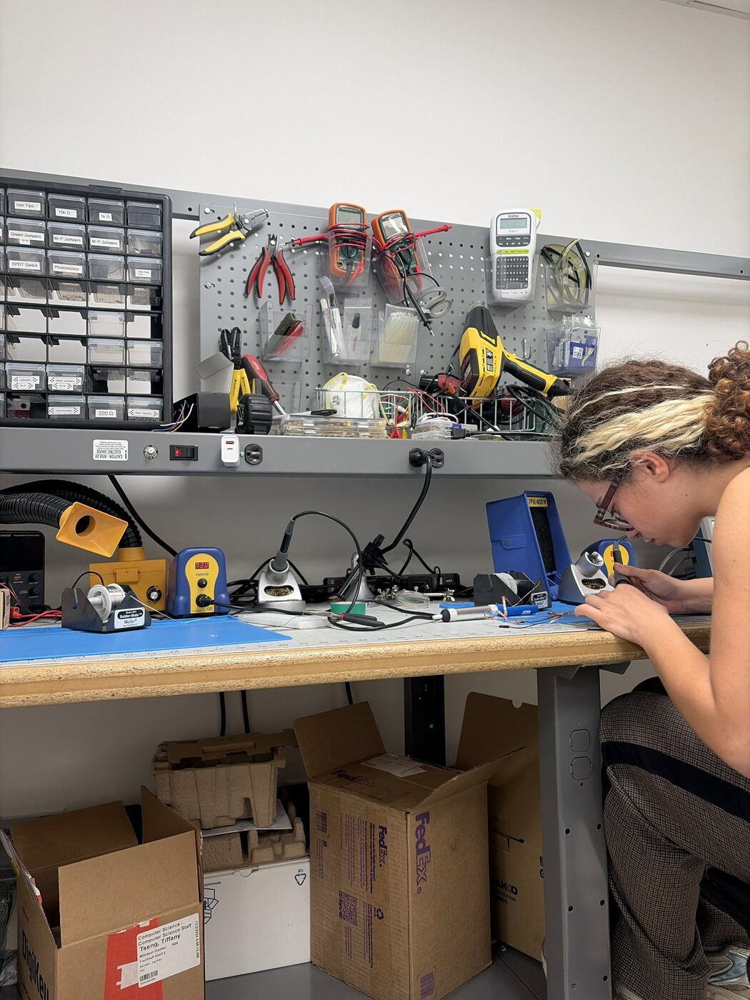
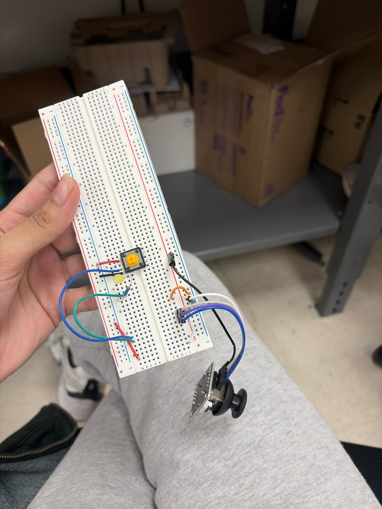
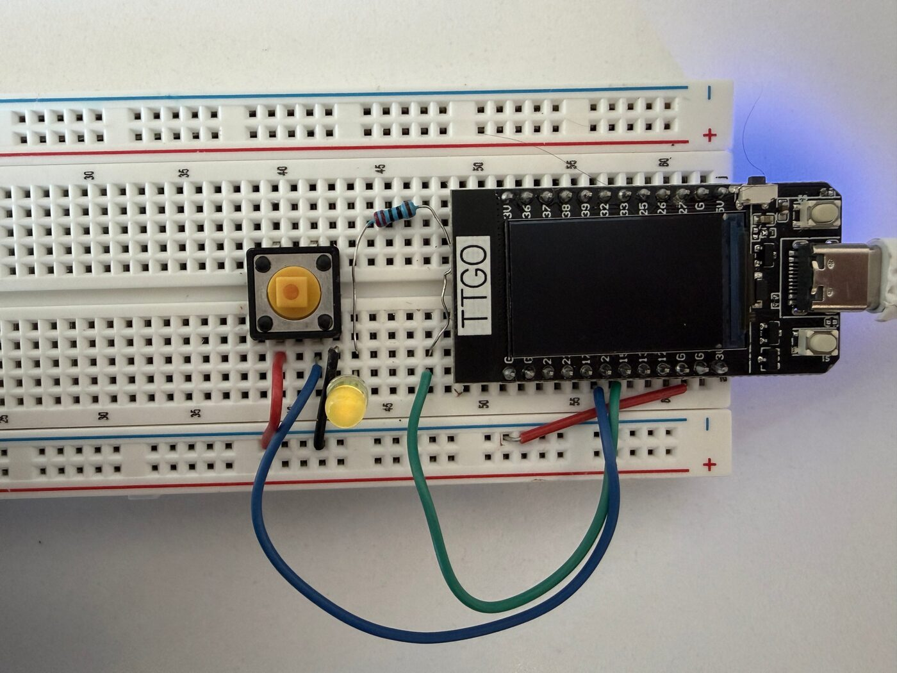
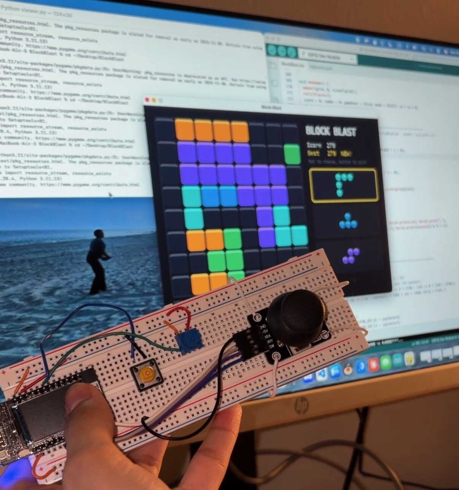
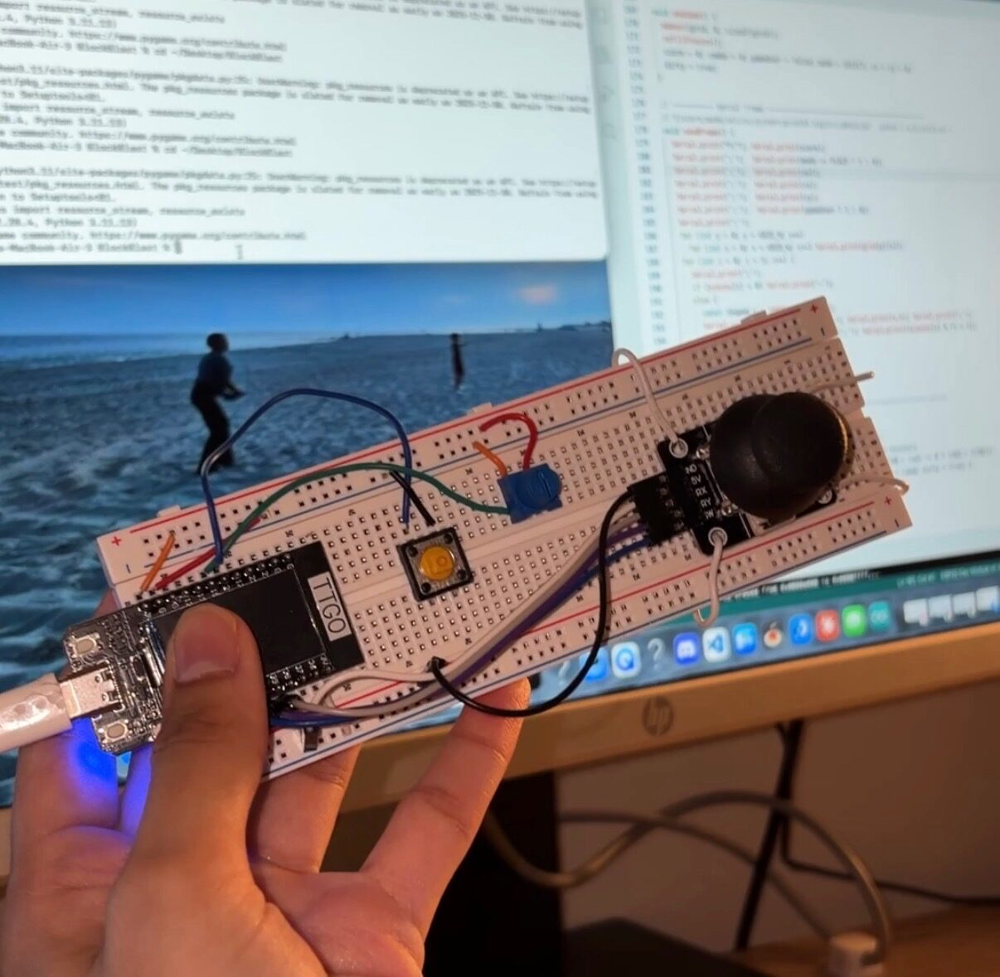

Artistic Inspiration / Vision
Growing up, I would play The Legend of Zelda with my little brother on the Wii U. The controller had a joystick and different knobs and buttons, while the display was on the TV. Video games with a joystick are fun because it gives you the ability to move around. Block Blast is a game like Tetris; however, it's usually played on an iPhone or iPad screen, with no use of a joystick. I was inspired by those retro Tetris handheld players to create a Block Blast version of my own.
Design Decisions
Before setting out to build the game, I knew I wanted to use Pygame for the interface of the game, and I wanted to practice working with C++ for the inputs and logic in Arduino. Another important decision was determining what each of the hardware components would control in the game. The joystick was the obvious choice to allow the user to move the block around the 8x8 square, with the built-in button on the joystick used to place the block. The potentiometer was used to rotate between the blocks, and the second button was used to select a piece before the joystick comes into play.
Technical Implementation
Throughout the implementation of this project, the hardest part was definitely understanding the circuitry of the breadboard, and making sure the jumpers were aligned to a + and − charge and the corresponding component. Soldering was also quite difficult for me. I had a lot of coffee that day, so my hands were shaky, making soldering very tricky, as holding the wire and board simultaneously took some effort. I also learned how important it is to use less solder, because originally my soldered heads were touching, and this shorted the ESP's circuitry. Removing solder was another very difficult process, and I ended up accidentally breaking my ESP board entirely, as I unintentionally burned it and the pieces on the board had fallen out. I had to get an entirely new ESP, so this was probably the most challenging aspect of the project.



Rendering the game on the computer screen via serial worked accordingly with a desktop viewer built with Python + Pygame. Pyserial was the pipe, and it opened the USB port connected to the ESP32, reading the bytes that were printed from the microcontroller. The sketch sends one line per frame, for example, F;33;0;1;0;0;0;0000...0000;3,2,.####.,7;3,3,..#..####,5;2,2,####,1. This translated to the score · mode · selected slot · cursor x,y · game over · 64 grid cells · the 3 pieces. I incorporated Pygame into the screen, so once you run the terminal commands, it opens the window, draws the 8x8 grid, and plays the sound. I used import numpy to generate the music waveforms. Luckily, the Tetris music was uncopyrighted, so I used the iconic Russian-sounding music in the background. The function sendFrame() was the most important piece of the code, because it would essentially take a snapshot of the game, capturing the score, which piece the user had selected, where the cursor is, and what was filled on the 8x8 grid. This function would condense all of the user logic and inputs and put it into one line of text, sent from the USB cable to the Mac. The Python viewer is what reads this line and draws out the GUI.

This is the section of code discussed above:
void sendFrame() {
Serial.print("F;"); Serial.print(score);
Serial.print(';'); Serial.print(mode == PLACE ? 1 : 0);
Serial.print(';'); Serial.print(sel);
Serial.print(';'); Serial.print(cx);
Serial.print(';'); Serial.print(cy);
Serial.print(';'); Serial.print(gameOver ? 1 : 0);
Serial.print(';');
for (int y = 0; y < GRID_H; y++)
for (int x = 0; x < GRID_W; x++) Serial.print(grid[y][x]);
for (int i = 0; i < 3; i++) {
Serial.print(';');
if (pieces[i] < 0) Serial.print('-');
else {
const Shapes = SHAPES[pieces[i]];
Serial.print(s.w); Serial.print(','); Serial.print(s.h); Serial.print(',');
Serial.print(s.cells); Serial.print(','); Serial.print((pieces[i] % 7) + 1);
}
}
Serial.println();
}From the Python viewer file, there were a few important lines of code that received the new bytes, updated the Python copy of the board, and redrew everything on the GUI.
ser.read() reads whatever the board sends, keeps it in buf, and hands off the line once \n arrives.
if ser.in_waiting:
buf += ser.read(ser.in_waiting)
while b"\n" in buf:
line, buf = buf.split(b"\n", 1)
st.parse(line.decode(errors="ignore"), audio)State.parse is also important because it splits the line and stores each field, which is the mirror image of sendFrame() on Arduino.
parts = line.strip().split(";")
if len(parts) != 11 or parts[0] != "F":
return False
self.score = int(parts[1]); self.mode = int(parts[2]); self.sel = int(parts[3])
self.cx = int(parts[4]); self.cy = int(parts[5]); self.over = int(parts[6])
g = parts[7]
if len(g) == GRID * GRID:
self.grid = [[int(g[y * GRID + x]) for x in range(GRID)] for y in range(GRID)]
for i in range(3):
p = parts[8 + i]
if p == "-":
self.pieces[i] = None
else:
w, h, cells, col = p.split(",")
self.pieces[i] = (int(w), int(h), cells, int(col))Another important piece of the Python viewer file was the draw() function, which paints the cells and scores and then uses a while loop to tie them together.
for y in range(GRID):
for x in range(GRID):
draw_cell(screen, ox + x * CELL, oy + y * CELL, CELL, COLORS[st.grid[y][x]])
...
screen.blit(font.render(f"Score {st.score}", True, TEXT), (px, oy + 50))
...
pygame.display.flip()
while True:
... # 1. read serial → parse
btn = draw(screen, st, font, small, big, status, audio) # 3. draw
clock.tick(60)
AI Use
I laid out the idea, the hardware connections, and the overall goal in a Claude prompt. I used Claude Fable 5.1 to generate the game in C++. My exact prompt was: "Build me a block blast game with the display on my computer. Must be written in C/C++ and so I can run it on the arduino IDE, the joy stick controls where u place the block the button on the joy stick lets u place it, potencimoter lets u select one of the three block choices, and other button lets u select one of these blocks. Do you have any other questions before you build?" It took a fair amount of prompt engineering to get the final product, whether it was changing the music or removing random bugs like the serial port text appearing on the GUI.